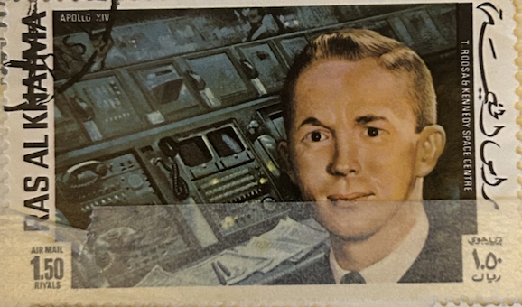
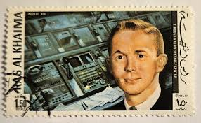
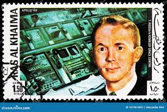
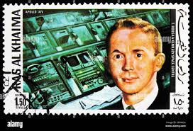
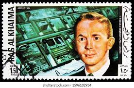

| SOURCE | TITLE| IMAGE MATCH | click to source page |
| eBay | Ras Al Khaima 1970, Apollo XIV Astronaut Roosa, 1.50 Riyals, CTO, FAST SHIP! | eBay |  |
| Dreamstime.com | Postage Stamp Printed in Ras Al Khaimah Shows Stuart Allen Roosa (1933-1994), Apollo 14 Serie, Circa 1972 Editorial Image - Image of moscow, letter: 167461865 |  |
| Alamy | Roosa stuart hi-res stock photography and images - Alamy |  |
| Shutterstock | 12 Stuart Roosa Royalty-Free Images, Stock Photos & Pictures | Shutterstock |  |